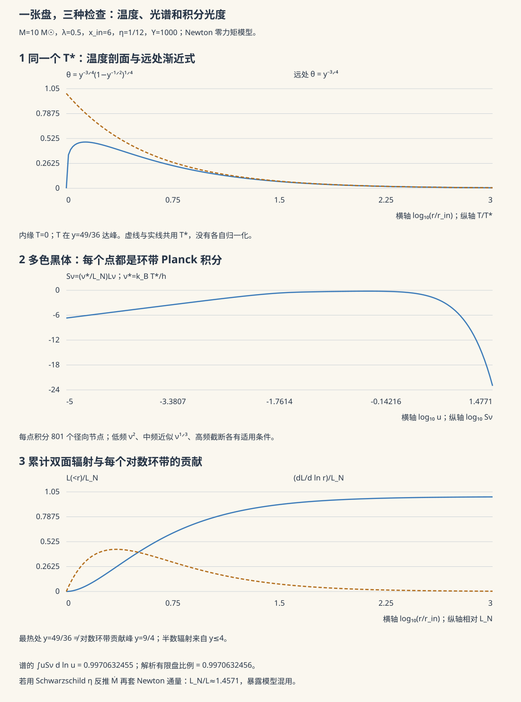

天体 V · 吸积、喷流与高能天体
对标：Frank, King & Raine《Accretion Power in Astrophysics》/ Rybicki & Lightman ｜ 前置：ap-04、fl-01、fl-06（MHD）、gr-02 吸积是宇宙中最高效的能量释放机制——把物质丢向致密天体，引力势能转化为辐射的效率可达 \(10\%\) 以上，比核聚变（0.7%）高一个数量级。类星体、X 射线双星、伽马暴的能源全在于此。

1. 吸积的效率
物质从无穷远落到致密天体表面 \(R\)，释放引力能
| 天体 | \(\eta\) |
|---|---|
| 白矮星 | \(\sim10^{-4}\) |
| 中子星 | \(\sim0.1\)–\(0.2\) |
| 黑洞（依自旋） | \(0.06\)（无自旋）–\(0.42\)（极端 Kerr） |
| 核聚变（对比） | \(0.007\) |
这解释了为什么类星体能以一个太阳系大小的区域，辐射超过整个星系的光度。
Eddington 光度：辐射压（作用于电子的 Thomson 散射，ap-01）与引力（作用于质子）的平衡
超过它则辐射把物质吹走，形成自限。这是天体物理中最有用的量级判据之一——由观测光度立即给出黑洞质量下限。
2. 标准薄盘
角动量是核心障碍：物质带着角动量无法直接落下，必须先把角动量输运出去。于是形成吸积盘——物质缓慢向内螺旋，角动量向外传递。
Shakura–Sunyaev 薄盘：用唯象的 \(\alpha\) 粘性（\(\nu = \alpha c_s H\)）封装未知的输运机制。由能量守恒得到与 \(\alpha\) 无关的温度剖面：
各环带发黑体，叠加成多色黑体谱（图 ap-05.1）。这个谱形被 X 射线双星的观测很好地验证。
关键的物理疑问：粘性从哪来？分子粘性小了十几个数量级，远不足以解释观测的吸积率。
答案是磁旋转不稳定性（MRI，Balbus–Hawley 1991）：在角速度随半径下降（开普勒盘满足 \(d\Omega/dr<0\)）的磁化盘中，任意弱的磁场都会触发不稳定 → 湍流 → 有效粘性。
这是 fl-04（旋转流的稳定性判据）与 fl-06（MHD）在天体上的直接兑现：纯流体的 Rayleigh 判据说开普勒盘是稳定的，加上磁场后结论完全反转。MRI 的发现是现代吸积理论的转折点。
3. 高能天体的谱系
| 系统 | 中心天体 | 特征 |
|---|---|---|
| 激变变星 | 白矮星 | 新星爆发；吸积达 \(M_{\rm Ch}\) 则 Ia 超新星（ap-04） |
| X 射线双星 | 中子星/黑洞 | 软/硬态转换、准周期振荡、相对论喷流（微类星体） |
| 活动星系核（AGN） | 超大质量黑洞（\(10^6\)–\(10^{10}M_\odot\)） | 类星体、赛弗特星系、射电星系、耀变体 |
| 伽马射线暴（GRB） | — | 长暴：大质量星塌缩（collapsar）；短暴：中子星并合 |
AGN 统一模型：不同类型很大程度上是观测角度不同（尘埃环遮挡与否、是否正对喷流）——一个用几何解释分类学的漂亮范例（细节仍在修正【争】）。
4. 喷流
许多吸积系统喷出相对论性准直喷流，长度可达数百 kpc。
主流机制【前沿，未完全定论】：
- Blandford–Znajek：抽取黑洞的转动能——磁力线穿过视界，通过类似单极发电机的过程提取能量。这是"从黑洞里取能"的具体机制（不违反热力学，取的是转动能而非质量能）；
- Blandford–Payne：从盘的磁离心风加速。
相对论效应：多普勒增亮使朝向我们的喷流极亮，并造成"视超光速"——投影效应下横向视速度可超过 \(c\)，这不违反相对论，是几何 + 光行时的结果。它曾被误读，现在是测量喷流洛伦兹因子的标准手段。
5. 多信使天文学
GW170817（2017）：双中子星并合，引力波 + 伽马暴 + 千新星光学/红外余辉同时观测。
一次事件同时给出：
- 中子星并合是短伽马暴的成因；
- r 过程重元素合成的直接证据（ap-03）；
- 引力波与光子的到达时差极小 → 引力波速度等于光速，精度约 \(10^{-15}\)——这一举排除了大批修改引力理论；
- 独立的哈勃常数测量（标准汽笛，🔗 cosmo-01 的 \(H_0\) 张力）。
这是天体物理近年最重要的单个事件，也展示了多信使方法的力量。
6. 练习与要点
例 1（类星体的能量账） \(L\sim10^{40}\) W，\(\eta\sim0.1\)：\(\dot M = L/\eta c^2\sim\) 数 \(M_\odot\)/年。辐射区尺度由光变时标限制在光天量级——几个太阳系大小的区域，亮过整个星系。
例 2（Eddington 判据的用法） 观测到 \(L=10^{39}\) W 的持续源 → \(M\gtrsim10^8M_\odot\)（若非超爱丁顿）。一个公式，从光度直接读出黑洞质量下限。
例 3（为什么需要 MRI） 分子粘性给出的吸积时标远超宇宙年龄；MRI 湍流把 \(\alpha\) 提到 \(10^{-2}\) 量级，才与观测的光变时标一致。"角动量如何输运"是吸积物理的中心问题。\(\blacksquare\)
下一页：从恒星尺度放大到星系与宇宙结构。旋转曲线给出的证据，把物理学推向了一个至今未知的成分——暗物质。